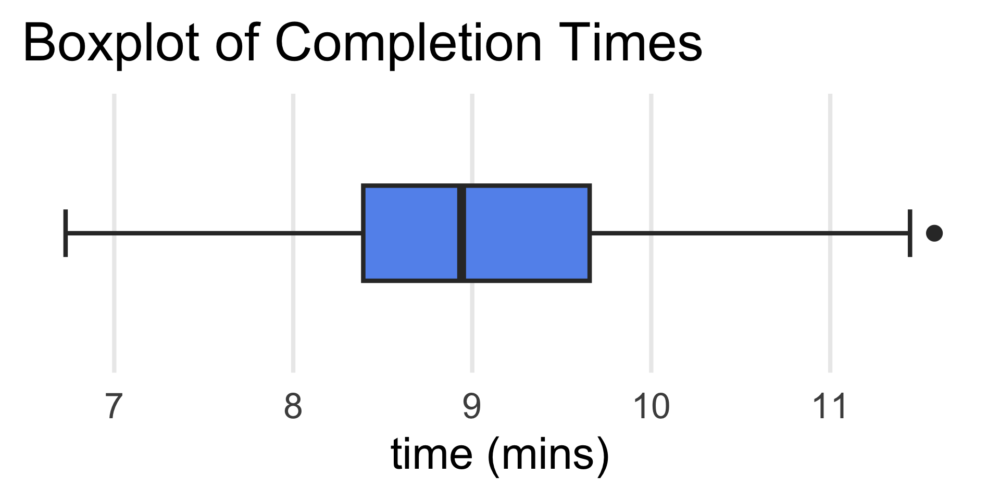
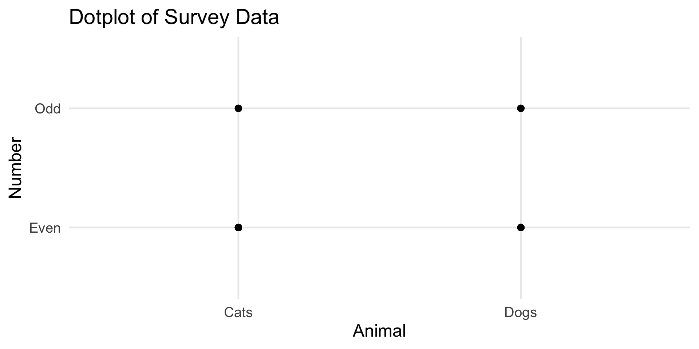
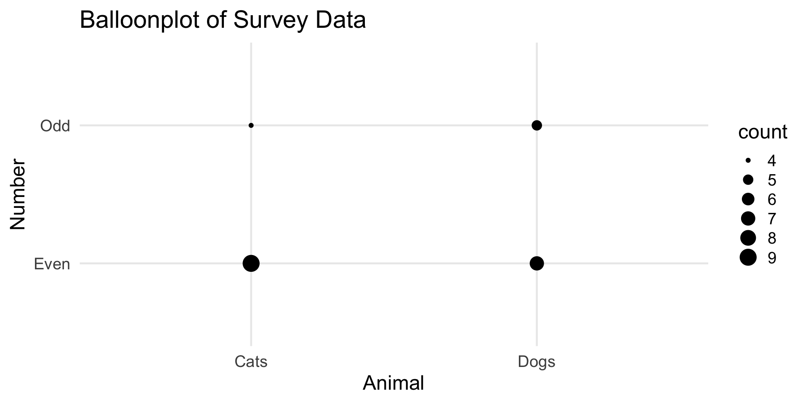
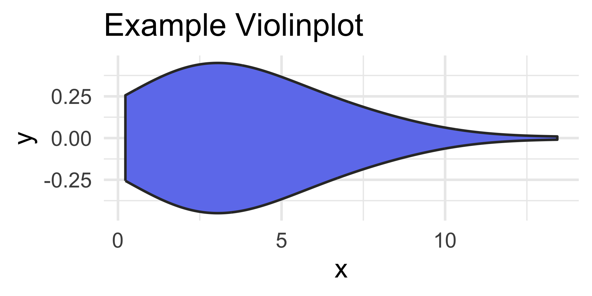
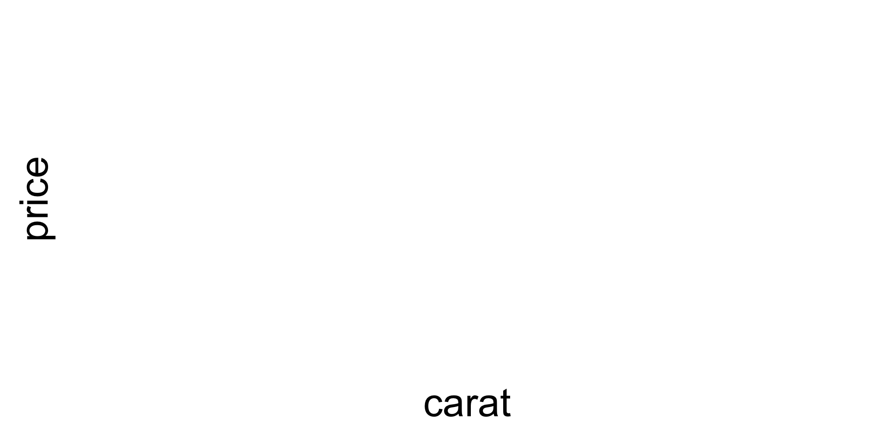

PSTAT 100: Lecture 03
Statistical Visalizations, Part I
Ethan P. Marzban
Department of Statistics and Applied Probability; UCSB
Summer Session A, 2025
Important Lab01 Information
Make sure you render your lab to a PDF, and submit the PDF to gradescope (I’ll quickly show you how to do this on the server now).
FOLLOW THE INSTRUCTIONS ON THE LAB! (I already see some Gradescope submissions that haven’t followed all the instructions, especially when it comes to adding/removing names to your lab submission).
- Please note: we’ll be lenient for the first couple of labs, but starting next week the grader reserves the right to deduct points for failing to follow instructions stated on the lab assignment.
Please also don’t forget to submit by 11:59pm tonight (Wednesday) on Gradescope!
Leadup
Summarizing Data
Data can be highly informative.
The information it provides, however, is oftentimes not immediately apparent.
- Indeed, it is the job of the data scientist to be able to extract the meaning from the data
- It is also the job of the data scientist to be able to effectively communicate this meaning to an audience.
One of the most important ways we can accomplish this is by producing appropriate summaries of our data.
- The branch of statistics known as descriptive statistics is essentially dedicated to the craft of effectively describing (i.e. summarising) data.
Leadup
Summarizing Data
- Broadly speaking, there are two types of summaries we could produce: numerical and visual
- We’ll spend most of our time today and tomorrow talking about visual summaries, and then take a crack at numerical summaries next week
- “Visual summaries” go by many different names - “graphs”, “plots”, “charts”, etc.
- Today, we’ll talk about a few different types of plots, and when they are appropriate to use
- Tomorrow, we’ll dive deeper into the mechanisms behind creating plots, and some principles for effective visualization.
Review: Variable Classification
Full Scheme
Single-Variable Plots
Mock Dataset
Class Standing
- Let’s consider another mock dataset, this one containing the standing (i.e. Freshman, Sophomore, Junior, or Senior) of a handful of (fictitious) students in a (fictitious) course:
Check your Understanding
What type of variable is standings (i.e. what is its classification)?
- Even though this is a relatively small dataset, it’s still difficult to make sense of the raw data.
Descriptive Statistics
Numerical Summaries
- So, we’d like to summarize this dataset in some way.
- Enter, descriptive statistics.
- To start, it seems natural to tabulate the number of students in our dataset that belong to each class standing.
- Such a table is called a frequency table.
| Freshman | Sophomore | Junior | Senior |
|---|---|---|---|
| 5 | 5 | 6 | 2 |
- This is an example of a numerical summary.
- Again, notice how much easier it was to extract information from the frequency table than it was to extract from the raw data!
Descriptive Statistics
Numerical Summaries
How can we convert this to a graphical summary?
Here’s one idea: draw four rectangles (i.e. “bars”), one for each of the four possible standings.
We can make the height of each bar proportional to the corresponding frequency
- For example, the height of the bar corresponding to Freshmen would be 5; the height of the bar corresponding to Sophomores would be 5; etc.
Descriptive Statistics
standings Dataset
Descriptive Statistics
Barplots/Bargraphs
This type of plot is called a barplot (or bargraph), and is the ideal visualization for a categorical variable.
In general, for a categorical variable with k categories C1 through Ck with corresponding frequencies f1 through fk, the resulting barplot will have k bars with the height of the ith bar given by fi.
Pie Charts: RIP
- Perhaps you’ve heard of (or seen) pie charts
- Pie charts are practically never used within the statistical commmunity anymore.
- Basically, areas of circular sectors can be misleading.
Stick with a barplot!
If you really desire a desert-themed plot, consider a donut plot:

Descriptive Statistics
Numerical Variable
So, that takes care of what type of plot to make when we have a single categorical variable. What about when we have a single numerical value?
As another concrete example, consider the following mock dataset comprised of exam scores (reported as a percentage between 0 and 100):
- Does it make sense to generate a barplot?
- Not really; we’d have 16 bars, each with height 1. This doesn’t summarize the data in any way- we might as well have just looked at the raw data!
Descriptive Statistics
Numerical Variable
- We can, however, “inject” categories into our data.
- That is; though we do not expect to have two or more students with exactly the same score, it is plausible to have a great many students with scores within some specified range
- To start, let’s consider ranges of scores that are 5 points in width:
Descriptive Statistics
Numerical Variable
There are different conventions for edge cases, but the most common is to have left-inclusive intervals.
- For example, given the categories we had on the previous slide, and observation equal to 85 would fall in the second category and not the first (I have tried to make this clear by using interval notation in the category titles).
By the way, we no longer call this table a frequency table; instead we call it a distribution table
We can, however, treat the distribution table in a similar manner to a frequency table: construct as many bars as we have cells, with heights proportional to the counts within each cell.
Descriptive Statistics
Numerical Variable
- The resulting plot is called a histogram.
Descriptive Statistics
Binwidths
Descriptive Statistics
Binwidths
Descriptive Statistics
Binwidths
- Notice the effect that changing the binwidth has on the overall shape of the histogram!
- When creating your own histograms, pay attention to your binwidth.
- In practice, there isn’t a single ideal binwidth that should be used; instead, play around with a few different binwidths before settling on one you feel results in a histogram that best captures the distribution of your data.
Descriptive Statistics
Boxplots
Descriptive Statistics
Boxplots and Histograms
- Note that both plots indicate a sort of “skew” to the data that is pulling the average of scores to the left.
- The skew is, however, not strong enough to introduce outliers into the dataset (how do we know that?)
Descriptive Statistics
Example: Boxplots
Example: 100 people were asked to run one mile; their completion times (in minutes) were recorded, and the following boxplot was generated:

- What were the slowest and fastest completion times?
- What was the median completion time?
- Anna ran a mile in around 8.5 minutes. Aproximately what percentage of runners were faster than her?
Quick Summary
Univariate Plots
- So, to quickly summarize:
- Given a single categorical variable, use a barplot/bargraph.
- Given a single numerical variable, you can use either a histogram or a boxplot.
- If you have a discrete variable, you can consider generating a barplot as opposed to a histogram, but it’s a bit context-dependent.
Two-Variable Plots
Two-Variable Plots
Most datasets are comprised of more than just one variable. As such, a common question among Data Scientists is: how do the different variables in a given dataset relate to one another?
We’ll tackle the case of comparing two variables today, and save our multivariate considerations for later.
Even in the two-variable case, there are three subcases to consider:
- Comparing two numerical variables
- Comparing a numerical variable and a categorical variable
- Comparing two categorical variables
Two Numerical Variables
- Let’s consider (yet another) mock dataset; this one contains observations on five students’ commute times (in minutes) and their commute distances (in miles).
| Commute.Dist. | Commute.Time |
|---|---|
| 0.5 | 3 |
| 1 | 2 |
| 1.5 | 4 |
| 2 | 6 |
| 2.5 | 8 |
- Note that each row of this dataframe (which, since our data is tidy, is equivalent to each observation in the dataset) is a pair of numbers.
- From our mathematical training, isn’t it tempting to then plot these pairs of numbers on a Cartesian Coordinate system?
Scatterplot
- Such a plot is called a scatterplot.
Scatterplot
Trends
When considering scatterplots, certain patterns may become apparent.
- For example, notice that, on average, as commute distance increases, so does commute time.
Such patterns are called trends.
Most trends can be classified along two axes: positive/negative, and linear/nonlinear.
A positive trend is observed when as
xincreases so doesy; a negative trend is observed when asxincreasesydecreases.A trend whose rate of change is constant is said to be linear; a trend whose rate of change is nonconstant is said to be nonlinear
Scatterplot
Trends
Scatterplot
Trends
- Another way to describe the findings of a scatterplot is in terms of the association between the variables being compared.
- For instance, if the scatterplot of
yvs.xdisplays a positive linear trend, we would say thatxandyhave a positive linear association, or thatxandyare positively linearly associated.
- For instance, if the scatterplot of
Your Turn!
Your Turn!
Turn to your neighbor(s), and come up with an example of a pair of variables you believe would exhibit a positive association, a pair that you believe would exhibit a negative association, and a pair you believe would exhibit no association.
04:00
A Numerical and a Categorical Variable
- Suppose that a particular drug claims to reduce the effects of hypertension. To test these claims, suppose 8 people with hypertension were selected; four of them were assigned the drug (treatment group) and the other four were not (control group). The systolic blood pressures of all subjects were recorded:
| ID | Group | Syst_BP |
|---|---|---|
| 1 | Control | 145 |
| 2 | Control | 140 |
| 3 | Treatment | 120 |
| 4 | Control | 143 |
| 5 | Treatment | 115 |
| 6 | Treatment | 103 |
| 7 | Control | 146 |
| 8 | Treatment | 117 |
A Numerical and a Categorical Variable
Ignoring the
IDvariable, rows of our dataframe are once again pairs of objects.Now, however, these pairs are not pairs of numbers; hence, plotting them on a Cartesian Coordinate system doesn’t make a whole lot of sense.
Nevertheless, if we so desire, we can generate something resembling a scatterplot, called a dotplot:
A Numerical and a Categorical Variable
Dotplot
A Numerical and a Categorical Variable
Side-by-Side Boxplot
A Numerical and a Categorical Variable
Side-by-Side Boxplot
This type of plot is called a side-by-side boxplot.
In general, a side-by-side boxplot has as many boxplots as categories, with the structure of each boxplot governed by the distribution of the numerical variable within each category.
By the way, notice that we can still consider the notion of trend, even in a side-by-side boxplot!
- For example, given the data we observed, does the drug appear affective in lowering systolic blood pressure? How can you tell?
A Word of Caution
Caution
Association does not imply causation.
- In other words, just becase blood pressures within the treatment group appear, on average, lower than those within the control group, doesn’t mean we can definitely concldue the drug caused this difference.
- For instance, what if, by chance, people in the treatment group happened to lead more active lifestyles - in this case, how do we know it wasn’t the activeness of lifestyle that drove the drop in blood pressure and not the drug?
- We’ll talk about causation toward the end of this course.
Your Turn!
Your Turn!
For each of the following scenarios, identify the type of graph you think is best.
- Allison wants to know whether certain majors perform better on PSTAT 120A exams.
- Tristan wants to know whether higher temperatures correspond to higher humidity levels.
- Morgan has collected information on how long it takes a sample of 100 athletes to complete an obstacle course, and would like to visualize the distribution of completion times.
04:00
Two Categorical Variables
Finally, we tackle the case of two categorical variables.
Instead of simulated data… let’s look at y’all’s data!
| Animal | Number |
|---|---|
| Cats | Even |
| Cats | Odd |
| Dogs | Even |
| Cats | Even |
| Dogs | Odd |
| Dogs | Odd |
| Dogs | Odd |
| Dogs | Even |
Two Categorical Variables
Animals and Numbers
I asked you two questions: whether you prefer cats or dogs, and whether you prefer even or odd numbers.
- Both of these variables (
AnimalandNumber) are categorical.
- Both of these variables (
But what does it mean to compare these variables?
We can’t even really make a dotplot.
- There are only four possible combinations: (
Cats,Even), (Cats,Odd), (Dogs,Even), (Dogs,Odd). - So our dotplot would just have four points, with a bunch of points stacked on top of each other.
- There are only four possible combinations: (
Two Categorical Variables
Animals and Numbers
Two Categorical Variables
Animals and Numbers
Sure, if some combinations of
AnimalandNumberpreferences were completely absent from the data, that would be something we could tell from the dotplot.That’s not the case here, though; among all 25 points of data, all four combinations have been covered.
But, remember: even though it looks like there are only 4 plots on our dotplot, there are actually 25; many of them are stacked on top of each other.
So, wouldn’t it be nice to incorporate information on how many points are stacked on top of each other?
Two Categorical Variables
Animals and Numbers
Two Categorical Variables
Animals and Numbers
- Among cat people, there seems to be a clear preference for even numbers over odd numbers
- Among dog people, there seems to be a roughly even split between even- and odd-preferences
- Among those who prefer even numbers, there is a relatively even split among cat and dog people
- Among those who prefer odd numbers, there seems to be a prevalence of dog people
Two Categorical Variables
Some Comments
Now, we “cheated” a bit.
Specifically, we introduced information about the number of observations corresponding to each (
Animal,Number) combination.That is, in essence, we’ve included information on our plot about a third variable!
This is one of the strange things about comparing two categorical variables: it is essentially impossible to make such a comparison without resorting to including cross-tabulated values.
- This will segue us nicely into our discussion tomorrow on plots that incorporate information from three or more variables!
Extensions
- The plots we talked about today are just the basics!
Violinplots

Hexagonal Heatmaps

Extensions
Ridgeline Plot:

Next Time
In tomorrow’s lecture, we’ll introduce a framework for producing graphics using computer softwares.
We’ll also discuss some multivariate plots (i.e. plots that incorporate information from more than 2 variables).
Finally, we’ll talk a little bit about color theory, and some principles of good visualizations.
Friendly Reminder: keep working on Homework 1!
Another Friendly Reminder: don’t forget to submit Lab 01 by 11:59pm tonight!
Final Friendly Reminder: please submit all required DSP paperwork ASAP (no later than tomorrow to ensure they get processed in time for the first ICA next week)

PSTAT 100 - Data Science: Concepts and Analysis, Summer 2025 with Ethan P. Marzban